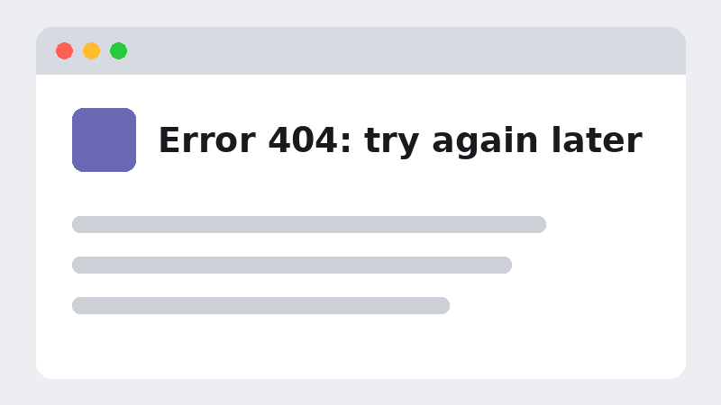

<body class="app-body theme-default layout-single-column"> <div class="app-holder" data-props='{"locale":"en"}' id="mastodon"> <div class="ui"> <div class="columns-area__panels"> <div class="columns-area__panels__main"> <div aria-label="Home" class="column" role="region"> <div class="column-header__wrapper"> <h1 class="column-header"><button class="column-header__title" type="button"><svg aria-hidden="true" class="icon icon-home" fill="currentColor" height="18" viewbox="0 -960 960 960" width="18"></svg>Home</button><div class="column-header__buttons"><button aria-label="Show settings" class="column-header__button" type="button"><svg aria-hidden="true" class="icon icon-tune" fill="currentColor" height="18" viewbox="0 -960 960 960" width="18"></svg></button></div></h1> </div> <div class="scrollable" role="feed"> <div class="item-list"><article class="status__wrapper ebddf4" data-id="655930064586342145"> <div class="status status-public" data-id="655930064586342145"><p class="status__content__spoiler iywhgl"><span class="status__content__spoiler-text">food (meat)</span><button class="status__content__spoiler-link" type="button">Show less</button></p><div class="status__info ofidwr"><a class="status__relative-time iywhgl" href="https://scholar.social/@amaralarsen_pdx/655930064586342145"><span class="status__visibility-icon"><svg aria-hidden="true" class="icon icon-globe" fill="currentColor" height="18" viewbox="0 -960 960 960" width="18"></svg></span><time>1h</time></a><a class="status__display-name ofidwr" href="https://scholar.social/@amaralarsen_pdx"><span class="display-name iywhgl"><span class="display-name__account iywhgl">@amaralarsen_pdx@scholar.social</span><bdi class="ofidwr"><strong class="display-name__html">Amara Larsen</strong></bdi></span><div class="status__avatar ofidwr"><div class="account__avatar"></div></div></a></div><div class="status__content status__content--with-action ebddf4" lang="en"><div class="status__content__text status__content__text--visible translate"><p>Started a reading log and I am already behind by 47 pages. cc <span class="h-card"><a class="u-url mention" href="https://scholar.social/@plind_photo">@<span>plind_photo</span></a></span> 🌧 <a class="mention hashtag" href="https://scholar.social/tags/baking" rel="tag">#<span>Baking</span></a></p></div></div><div class="status__action-bar dfx32x"><button aria-label="Favorite" class="status__action-bar__button star-icon icon-button icon-button--with-counter ebddf4" type="button"><svg aria-hidden="true" class="icon icon-star" fill="currentColor" height="18" viewbox="0 -960 960 960" width="18"></svg><span class="icon-button__counter"><span class="animated-number">3</span></span></button><div class="status__action-bar__spacer h5973k"></div><button aria-label="Bookmark" class="status__action-bar__button status__action-bar__bookmark bookmark-icon icon-button dfx32x" type="button"><svg aria-hidden="true" class="icon icon-bookmark" fill="currentColor" height="18" viewbox="0 -960 960 960" width="18"></svg></button><button aria-label="Reply" class="status__action-bar__button icon-button icon-button--with-counter ofidwr" type="button"><svg aria-hidden="true" class="icon icon-reply" fill="currentColor" height="18" viewbox="0 -960 960 960" width="18"></svg><span class="icon-button__counter"><span class="animated-number">2</span></span></button><button aria-label="More" class="status__action-bar__button status__action-bar__dropdown icon-button rdnwaz" type="button"><svg aria-hidden="true" class="icon icon-more" fill="currentColor" height="18" viewbox="0 -960 960 960" width="18"></svg></button><button aria-label="Boost" class="status__action-bar__button icon-button icon-button--with-counter iywhgl" type="button"><svg aria-hidden="true" class="icon icon-boost" fill="currentColor" height="18" viewbox="0 -960 960 960" width="18"></svg><span class="icon-button__counter"><span class="animated-number">2</span></span></button></div></div> </article><article class="status__wrapper dfx32x" data-id="437691730883731816"> <div class="status status-public" data-id="437691730883731816"><div class="status__content status__content--with-action iywhgl" lang="en"><div class="status__content__text status__content__text--visible translate"><p><span class="h-card"><a class="u-url mention" href="https://fosstodon.org/@ovisser">@<span>ovisser</span></a></span> Reading Piranesi again and it hits differently this year. Spent the whole morning at our community garden and saw 69 herons. 🙌 <a class="mention hashtag" href="https://fosstodon.org/tags/birding" rel="tag">#<span>Birding</span></a></p></div></div><div class="status__info ofidwr"><a class="status__relative-time iywhgl" href="https://fosstodon.org/@ravi_tanaka_dev/437691730883731816"><span class="status__visibility-icon"><svg aria-hidden="true" class="icon icon-globe" fill="currentColor" height="18" viewbox="0 -960 960 960" width="18"></svg></span><time>2h</time></a><a class="status__display-name ofidwr" href="https://fosstodon.org/@ravi_tanaka_dev"><span class="display-name iywhgl"><span class="display-name__account iywhgl">@ravi_tanaka_dev@fosstodon.org</span><bdi class="ofidwr"><strong class="display-name__html">Ravi 🌱</strong></bdi></span><div class="status__avatar ofidwr"><div class="account__avatar"></div></div></a></div><div class="status__action-bar ebddf4"><div class="status__action-bar__spacer h5973k"></div><button aria-label="More" class="status__action-bar__button status__action-bar__dropdown icon-button rdnwaz" type="button"><svg aria-hidden="true" class="icon icon-more" fill="currentColor" height="18" viewbox="0 -960 960 960" width="18"></svg></button><button aria-label="Boost" class="status__action-bar__button icon-button icon-button--with-counter iywhgl" type="button"><svg aria-hidden="true" class="icon icon-boost" fill="currentColor" height="18" viewbox="0 -960 960 960" width="18"></svg><span class="icon-button__counter"><span class="animated-number">0</span></span></button><button aria-label="Favorite" class="status__action-bar__button star-icon icon-button icon-button--with-counter ebddf4" type="button"><svg aria-hidden="true" class="icon icon-star" fill="currentColor" height="18" viewbox="0 -960 960 960" width="18"></svg><span class="icon-button__counter"><span class="animated-number">7</span></span></button><button aria-label="Reply" class="status__action-bar__button icon-button icon-button--with-counter ofidwr" type="button"><svg aria-hidden="true" class="icon icon-reply" fill="currentColor" height="18" viewbox="0 -960 960 960" width="18"></svg><span class="icon-button__counter"><span class="animated-number">1</span></span></button><button aria-label="Bookmark" class="status__action-bar__button status__action-bar__bookmark bookmark-icon icon-button dfx32x" type="button"><svg aria-hidden="true" class="icon icon-bookmark" fill="currentColor" height="18" viewbox="0 -960 960 960" width="18"></svg></button></div></div> </article><article class="status__wrapper h5973k" data-id="882209469486785779"> <div class="status status-public status__wrapper-reblog" data-id="882209469486785779"><div class="status__info iywhgl"><a class="status__relative-time iywhgl" href="https://mathstodon.xyz/@amoretti_art/882209469486785779"><span class="status__visibility-icon"><svg aria-hidden="true" class="icon icon-globe" fill="currentColor" height="18" viewbox="0 -960 960 960" width="18"></svg></span><time>4h</time></a><a class="status__display-name ofidwr" href="https://mathstodon.xyz/@amoretti_art"><span class="display-name iywhgl"><span class="display-name__account iywhgl">@amoretti_art@mathstodon.xyz</span><bdi class="ofidwr"><strong class="display-name__html">Ada</strong></bdi></span><div class="status__avatar ofidwr"><div class="account__avatar"></div></div></a></div><div class="status__action-bar dfx32x"><button aria-label="Reply" class="status__action-bar__button icon-button icon-button--with-counter ofidwr" type="button"><svg aria-hidden="true" class="icon icon-reply" fill="currentColor" height="18" viewbox="0 -960 960 960" width="18"></svg><span class="icon-button__counter"><span class="animated-number">4</span></span></button><button aria-label="Boost" class="status__action-bar__button icon-button icon-button--with-counter iywhgl" type="button"><svg aria-hidden="true" class="icon icon-boost" fill="currentColor" height="18" viewbox="0 -960 960 960" width="18"></svg><span class="icon-button__counter"><span class="animated-number">5</span></span></button><button aria-label="Favorite" class="status__action-bar__button star-icon icon-button icon-button--with-counter ebddf4" type="button"><svg aria-hidden="true" class="icon icon-star" fill="currentColor" height="18" viewbox="0 -960 960 960" width="18"></svg><span class="icon-button__counter"><span class="animated-number">2</span></span></button><div class="status__action-bar__spacer h5973k"></div><button aria-label="More" class="status__action-bar__button status__action-bar__dropdown icon-button rdnwaz" type="button"><svg aria-hidden="true" class="icon icon-more" fill="currentColor" height="18" viewbox="0 -960 960 960" width="18"></svg></button><button aria-label="Bookmark" class="status__action-bar__button status__action-bar__bookmark bookmark-icon icon-button dfx32x" type="button"><svg aria-hidden="true" class="icon icon-bookmark" fill="currentColor" height="18" viewbox="0 -960 960 960" width="18"></svg></button></div><div class="status__prepend ofidwr"><div class="status__prepend-icon-wrapper"><svg aria-hidden="true" class="icon status__prepend-icon icon-boost" fill="currentColor" height="18" viewbox="0 -960 960 960" width="18"></svg></div><span><a class="status__display-name muted" href="#"><bdi><strong>Freya Nielsen</strong></bdi></a> boosted</span></div><div class="status__content status__content--with-action ebddf4" lang="en"><div class="status__content__text status__content__text--visible translate"><p>Sketched the coffee shop on 5th during lunch, still learning how to draw bicycles. cc <span class="h-card"><a class="u-url mention" href="https://mathstodon.xyz/@plind_photo">@<span>plind_photo</span></a></span> 🙌 <a class="mention hashtag" href="https://mathstodon.xyz/tags/rust" rel="tag">#<span>Rust</span></a> <a class="mention hashtag" href="https://mathstodon.xyz/tags/gardening" rel="tag">#<span>Gardening</span></a> <a class="mention hashtag" href="https://mathstodon.xyz/tags/opensource" rel="tag">#<span>OpenSource</span></a></p></div></div></div> </article><article class="status__wrapper ofidwr" data-id="268296251756116010"> <div class="status status-public" data-id="268296251756116010"><div class="status__content status__content--with-action iywhgl" lang="en"><div class="status__content__text status__content__text--visible translate"><p>Good read: <a href="https://fieldnotes.blog/blog/7276" rel="nofollow noopener" target="_blank">https://fieldnotes.blog/blog/7276</a> Our tiny team shipped release 1.0 after 86 days of testing. Accidentally made enough jollof rice for 14 people. Neighbours are getting some. cc <span class="h-card"><a class="u-url mention" href="https://chaos.social/@ovisser">@<span>ovisser</span></a></span> 😅 <a class="mention hashtag" href="https://chaos.social/tags/mastoart" rel="tag">#<span>MastoArt</span></a></p></div></div><div class="status__action-bar dfx32x"><button aria-label="Bookmark" class="status__action-bar__button status__action-bar__bookmark bookmark-icon icon-button dfx32x" type="button"><svg aria-hidden="true" class="icon icon-bookmark" fill="currentColor" height="18" viewbox="0 -960 960 960" width="18"></svg></button><button aria-label="More" class="status__action-bar__button status__action-bar__dropdown icon-button rdnwaz" type="button"><svg aria-hidden="true" class="icon icon-more" fill="currentColor" height="18" viewbox="0 -960 960 960" width="18"></svg></button><button aria-label="Boost" class="status__action-bar__button icon-button icon-button--with-counter iywhgl" type="button"><svg aria-hidden="true" class="icon icon-boost" fill="currentColor" height="18" viewbox="0 -960 960 960" width="18"></svg><span class="icon-button__counter"><span class="animated-number">4</span></span></button><div class="status__action-bar__spacer h5973k"></div><button aria-label="Favorite" class="status__action-bar__button star-icon icon-button icon-button--with-counter ebddf4" type="button"><svg aria-hidden="true" class="icon icon-star" fill="currentColor" height="18" viewbox="0 -960 960 960" width="18"></svg><span class="icon-button__counter"><span class="animated-number">0</span></span></button><button aria-label="Reply" class="status__action-bar__button icon-button icon-button--with-counter ofidwr" type="button"><svg aria-hidden="true" class="icon icon-reply" fill="currentColor" height="18" viewbox="0 -960 960 960" width="18"></svg><span class="icon-button__counter"><span class="animated-number">3</span></span></button></div><a class="status-card ebddf4" href="https://fieldnotes.blog/blog/7276" rel="noopener" target="_blank"><div class="status-card__image"></div><div class="status-card__content"><span class="status-card__host"><span lang="en">fieldnotes.blog</span></span><strong class="status-card__title">Inside the volunteer-run the city archive</strong><span class="status-card__description">An explainer with charts and sources.</span></div></a><div class="status__info ofidwr"><a class="status__relative-time iywhgl" href="https://chaos.social/@dchen_n/268296251756116010"><span class="status__visibility-icon"><svg aria-hidden="true" class="icon icon-globe" fill="currentColor" height="18" viewbox="0 -960 960 960" width="18"></svg></span><time>52m</time></a><a class="status__display-name ofidwr" href="https://chaos.social/@dchen_n"><span class="display-name iywhgl"><span class="display-name__account iywhgl">@dchen_n@chaos.social</span><bdi class="ofidwr"><strong class="display-name__html">Diego Chen</strong></bdi></span><div class="status__avatar ofidwr"><div class="account__avatar"></div></div></a></div></div> </article><article class="status__wrapper iywhgl" data-id="126116899446374195"> <div class="status status-public" data-id="126116899446374195"><div class="status__info ofidwr"><a class="status__relative-time iywhgl" href="https://mastodon.scot/@noor_volkov_n/126116899446374195"><span class="status__visibility-icon"><svg aria-hidden="true" class="icon icon-globe" fill="currentColor" height="18" viewbox="0 -960 960 960" width="18"></svg></span><time>1h</time></a><a class="status__display-name ofidwr" href="https://mastodon.scot/@noor_volkov_n"><span class="display-name iywhgl"><span class="display-name__account iywhgl">@noor_volkov_n@mastodon.scot</span><bdi class="ofidwr"><strong class="display-name__html">Noor Volkov</strong></bdi></span><div class="status__avatar ofidwr"><div class="account__avatar"></div></div></a></div><div class="status__action-bar dfx32x"><button aria-label="Boost" class="status__action-bar__button icon-button icon-button--with-counter iywhgl" type="button"><svg aria-hidden="true" class="icon icon-boost" fill="currentColor" height="18" viewbox="0 -960 960 960" width="18"></svg><span class="icon-button__counter"><span class="animated-number">3</span></span></button><div class="status__action-bar__spacer h5973k"></div><button aria-label="Reply" class="status__action-bar__button icon-button icon-button--with-counter ofidwr" type="button"><svg aria-hidden="true" class="icon icon-reply" fill="currentColor" height="18" viewbox="0 -960 960 960" width="18"></svg><span class="icon-button__counter"><span class="animated-number">2</span></span></button><button aria-label="Bookmark" class="status__action-bar__button status__action-bar__bookmark bookmark-icon icon-button dfx32x" type="button"><svg aria-hidden="true" class="icon icon-bookmark" fill="currentColor" height="18" viewbox="0 -960 960 960" width="18"></svg></button><button aria-label="Favorite" class="status__action-bar__button star-icon icon-button icon-button--with-counter ebddf4" type="button"><svg aria-hidden="true" class="icon icon-star" fill="currentColor" height="18" viewbox="0 -960 960 960" width="18"></svg><span class="icon-button__counter"><span class="animated-number">5</span></span></button><button aria-label="More" class="status__action-bar__button status__action-bar__dropdown icon-button rdnwaz" type="button"><svg aria-hidden="true" class="icon icon-more" fill="currentColor" height="18" viewbox="0 -960 960 960" width="18"></svg></button></div><div class="status__content status__content--with-action iywhgl" lang="en"><div class="status__content__text status__content__text--visible translate"><p><span class="h-card"><a class="u-url mention" href="https://mastodon.scot/@ovisser">@<span>ovisser</span></a></span> Is it just me or did Python get noticeably faster in the last release? Took 65 photos at the city archive and exactly one of them is in focus. 📚 <a class="mention hashtag" href="https://mastodon.scot/tags/weather" rel="tag">#<span>Weather</span></a> <a class="mention hashtag" href="https://mastodon.scot/tags/urbansketching" rel="tag">#<span>UrbanSketching</span></a></p></div></div><div class="media-gallery ebddf4"><div class="media-gallery__item"><a class="media-gallery__item-thumbnail" href="#"></a></div></div></div> </article></div> </div> </div> </div> <div class="columns-area__panels__pane columns-area__panels__pane--navigational"> <div class="navigation-panel"> <div class="navigation-panel__logo"><span class="logo-mark">m</span><span>mastodon</span></div> <input aria-label="Search" class="search__input" placeholder="Search or paste URL" style="" type="text"/> <a class="column-link column-link--transparent column-link--active" href="#"><svg aria-hidden="true" class="icon icon-home" fill="currentColor" height="18" viewbox="0 -960 960 960" width="18"></svg><span>Home</span></a> <a class="column-link column-link--transparent" href="#"><svg aria-hidden="true" class="icon icon-explore" fill="currentColor" height="18" viewbox="0 -960 960 960" width="18"></svg><span>Explore</span></a> <a class="column-link column-link--transparent" href="#"><svg aria-hidden="true" class="icon icon-globe" fill="currentColor" height="18" viewbox="0 -960 960 960" width="18"></svg><span>Live feeds</span></a> <a class="column-link column-link--transparent" href="#"><svg aria-hidden="true" class="icon icon-bell" fill="currentColor" height="18" viewbox="0 -960 960 960" width="18"></svg><span>Notifications</span></a> <a class="column-link column-link--transparent" href="#"><svg aria-hidden="true" class="icon icon-mail" fill="currentColor" height="18" viewbox="0 -960 960 960" width="18"></svg><span>Private mentions</span></a> <a class="column-link column-link--transparent" href="#"><svg aria-hidden="true" class="icon icon-bookmark" fill="currentColor" height="18" viewbox="0 -960 960 960" width="18"></svg><span>Bookmarks</span></a> <a class="column-link column-link--transparent" href="#"><svg aria-hidden="true" class="icon icon-star" fill="currentColor" height="18" viewbox="0 -960 960 960" width="18"></svg><span>Favorites</span></a> <a class="column-link column-link--transparent" href="#"><svg aria-hidden="true" class="icon icon-list" fill="currentColor" height="18" viewbox="0 -960 960 960" width="18"></svg><span>Lists</span></a> <hr/> <a class="column-link column-link--transparent" href="#"><svg aria-hidden="true" class="icon icon-gear" fill="currentColor" height="18" viewbox="0 -960 960 960" width="18"></svg><span>Preferences</span></a> <a class="navigation-panel__compose" href="#">New post</a> </div> </div> </div> </div> </div> </body>